How it works
- The sender locks the files in one password-protected file.
- The sender shares that file with only the receiver, through a cloud storage service.
- The sender sends the password separately, by text message or phone call, never in the email with the link.
- The receiver unlocks it with a free app called 7-Zip.
Anyone who finds the link but doesn’t have the password gets nothing readable. Do this on a computer, not a phone.
Before you start
- This guide shows Google Drive. Dropbox, Box and OneDrive work on the same idea, so use whichever one you already have: share with only that person, give them view-only access, and never make a link that works for anyone.
- If you use Google Drive, the receiver needs a Google account, and you must share with the email address that account uses. It doesn’t have to be Gmail. If they don’t have one, they can create a free one with their current email address.
- Sending just one document? You may not need any of this. A PDF can be password protected on its own and opened without installing anything. This guide is for folders and mixed file types.
Part 1. Sender: lock the files
You need 7-Zip installed first. If you don’t have it, do Part 4, step 1, then come back.
- Put everything you’re sending into one folder. Copy the files (don’t move the originals) into a new folder with a plain name.
-
Right-click the folder and find 7-Zip.
Windows 11 hides some menu items. Look for Show more options at the bottom of the menu
(or App extensions, depending on your Windows version). You can also hold
Shift while you right-click, or select the folder and press Shift + F10.
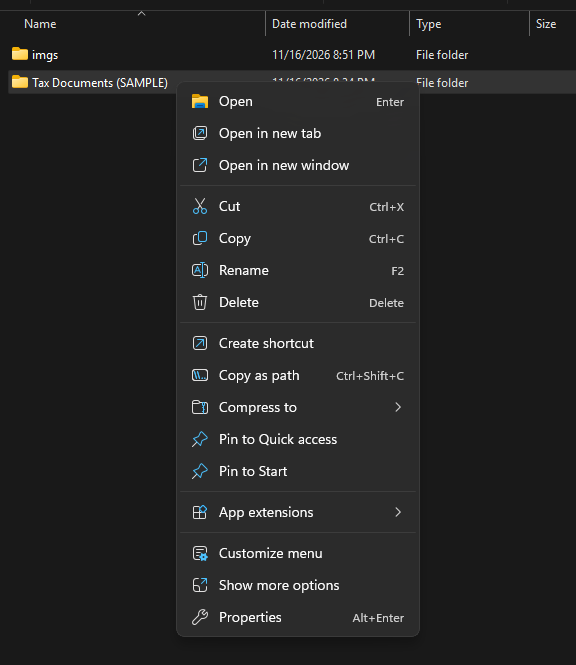
The short menu. Click Show more options. I can’t find 7-Zip in the right-click menu
Open 7-Zip File Manager from the Start menu, browse to your folder, select it, and click Add. You’ll get the same box as in step 4.
If you don’t see Show more options, open Settings → Personalization → Context menu and turn Show more options on.
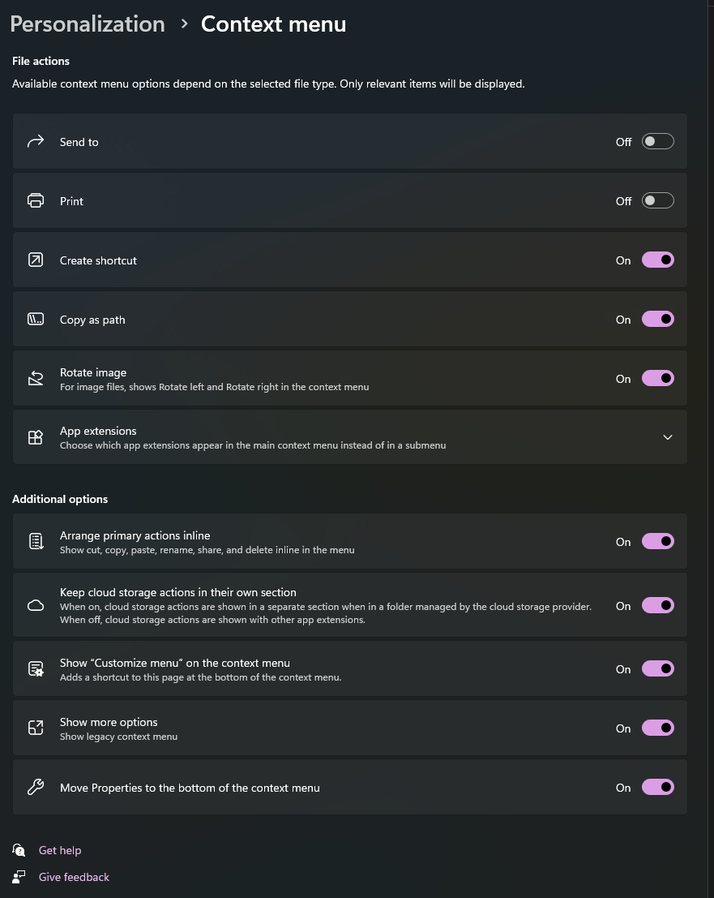
-
Choose 7-Zip, then Add to archive…
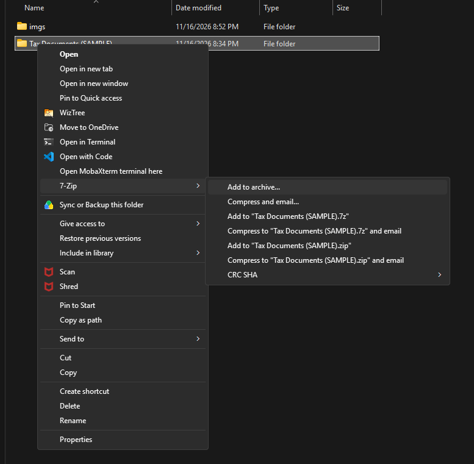
Your menu will have different items. Look for the one named 7-Zip. -
Fill in the box exactly like this.
- Archive format: 7z
- Enter password and Reenter password: type your password twice. Use a passphrase of four or more random words, or at least 12 characters.
- Encryption method: AES-256
- Tick Encrypt file names. Without this, people can still see what the files are called.
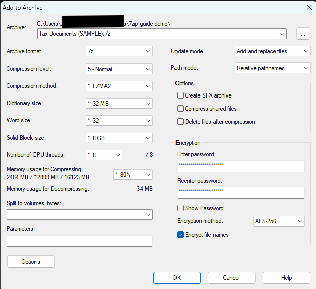
Write the password down somewhere safe for now. You’ll need to give it to the receiver. -
You now have a new file ending in
.7z. That’s the locked file. It’s the only thing you’ll share.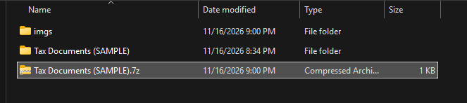
Mac steps are written from the app’s own instructions and don’t have pictures yet.
- Put everything you’re sending into one folder. Copy the files (don’t move the originals) into a new folder.
- Install Keka. Go to keka.io, download the app, and drag it into your Applications folder. (The same app is sold in the Mac App Store; either one is fine.)
- Set it up and drag your folder in. Open Keka. Set the format to 7z, type your password in the password box (use four or more random words, or at least 12 characters), and turn on Encrypt filenames if you see it. Then drag your folder onto the Keka window.
-
Check that a file ending in
.7zappeared next to your folder. That’s the only thing you’ll share.
Install 7-Zip, then run one command:
# Debian / Ubuntu
sudo apt install 7zip # the command is then called 7zz (on older releases: p7zip-full and the command 7z)
# Lock a folder (you'll be asked for the password; 7-Zip does not show it as you type)
7zz a -p -mhe=on -mx=5 private.7z my-folder/
-mhe=on also hides the file names. 7z archives use AES-256 encryption automatically. Use a
passphrase of four or more random words, or at least 12 characters.
Part 2. Sender: share it with only one person
The steps below use Google Drive. Other services have the same settings under different names.
- Ask the receiver which email address they use for Google. You’ll share with exactly that address. A different address won’t work.
-
Upload the
.7zfile to Google Drive, then select it and click the Share icon (a person with a plus sign). -
Type the receiver’s email, set the role to Viewer, and click Share.
Viewers can’t change or share the file.
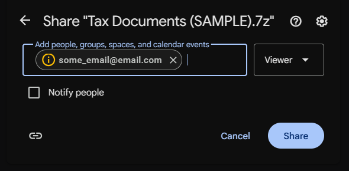
This example uses a made-up email address. -
Open Share again and check that General access says Restricted.
That means only the people you added can open the file, even if someone else gets the link. Never
change it to “Anyone with the link.”
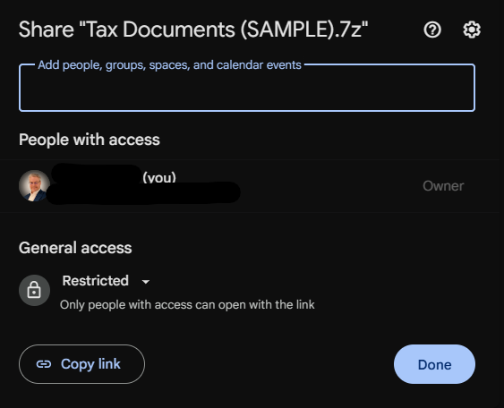
-
Click Copy link and send it to the receiver by email. The link alone is no
good without the password.
STOP: do not put the password in this email or message. Send the password separately, as a text message or a phone call. See Part 3.
Don’t turn off downloading for viewers. The receiver has to download the file to unlock it.
Part 3. Sender: text the password separately
- Give the password by text message or phone call, never in the same email or message as the link.
- Don’t put the password in the folder or file name, and don’t save it in a shared document.
- Use a new password each time. Never reuse one you use anywhere else.
- If you’re not sure the number or email belongs to the right person, call them first.
Part 4. Receiver: open the files
Step 1: install the free unlock app (one time only)
-
Go to 7-zip.org/download.html and download the Windows installer.
Click Download on the row for 64-bit Windows x64 and save the file. Most computers
are 64-bit. If yours is a newer ARM (Snapdragon) laptop, use the arm64 row instead.
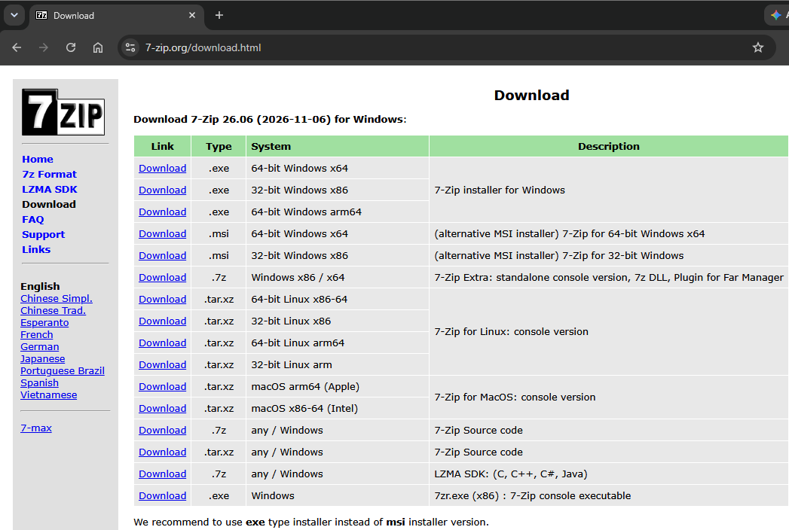
Click the first Download (64-bit Windows x64), inside the red box. The version number will be newer or older than this picture; that’s fine. -
Open the downloaded file and click Install. If Windows asks whether to
allow it, say yes, but only for a file you just downloaded from 7-zip.org.
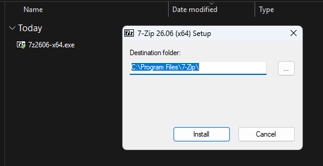
Leave the folder as it is and click Install. -
Click Close when it says 7-Zip is installed.
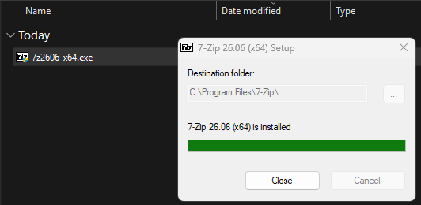
Go to keka.io, download the app and drag it into your Applications folder. (The Unarchiver, free in the Mac App Store, also works.) The free 7-Zip download for Mac is command-line only, so don’t use that one.
sudo apt install 7zip # Debian / Ubuntu; the command is 7zz (older releases: p7zip-full, command 7z)
# or, with Homebrew: brew install sevenzipStep 2: download the locked file
- Open the link and sign in to Google with the email address the sender used. If it says You need access, you’re signed in with a different account.
-
Click the download arrow in the top-left. Drive can’t show a preview of this kind of
file, so it will look empty. That’s normal.
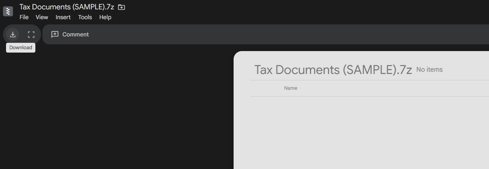
-
If Drive says it can’t scan the file for viruses, click Download anyway.
This is normal for any password-protected file.
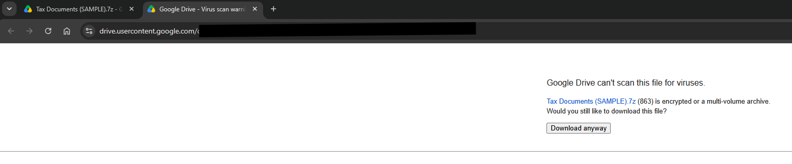
Step 3: unlock it
-
Open your Downloads folder and right-click the
.7zfile. Choose Show more options if you see it, then 7-Zip and Extract Here. Don’t use Windows’ own Extract All; it can’t open this kind of file.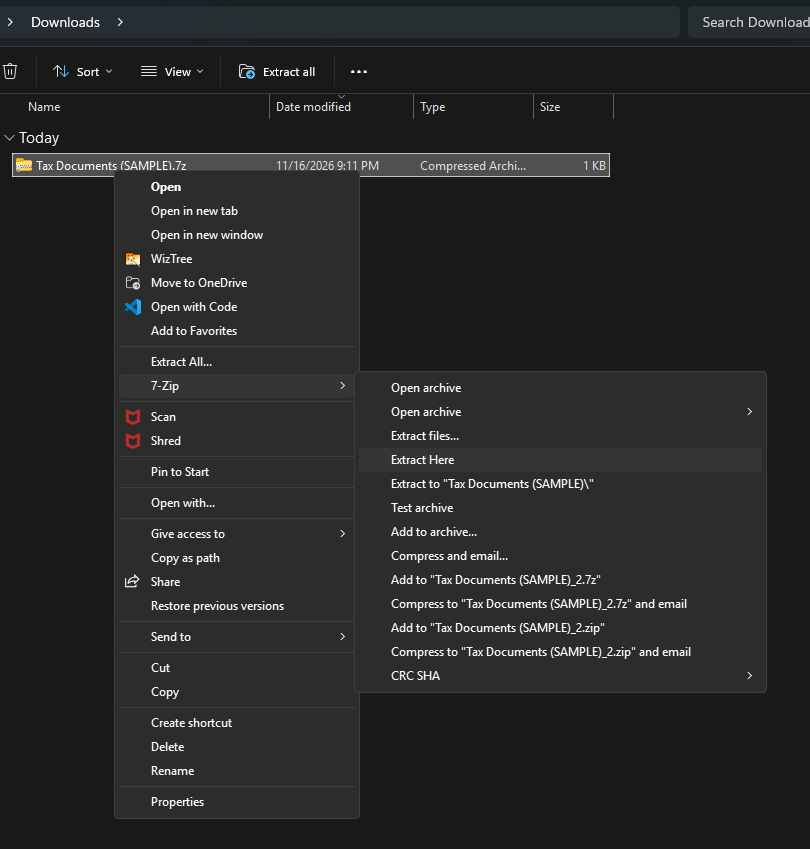
-
Type the password and click OK. Tick Show password if you want to check
what you typed.
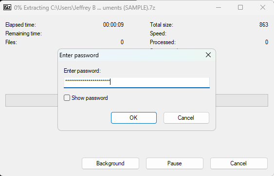
-
Your files appear in a new folder next to the downloaded file.
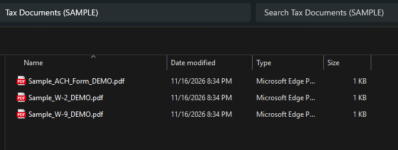
-
Open Keka, then drag the downloaded
.7zfile onto the Keka window. (Or right-click the file, choose Open With, then Keka.) - Type the password when it asks and click OK.
- Your files appear in a new folder next to the downloaded file.
Don’t double-click the file and use the Mac’s built-in opener. It often can’t open these files.
7zz x ~/Downloads/private.7z # asks for the password, then extracts into the current folderIf something goes wrong
“Cannot open encrypted archive. Wrong password?”
The password doesn’t match. Check capital letters and spaces. If you copied and pasted it, a hidden space at the end is the usual culprit. Tick Show password to see what you’re typing. Ask the sender to read it to you over the phone if you’re still stuck.
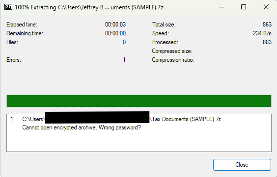
Drive says “You need access”
You’re signed in to a different Google account than the one the sender used. Sign out, or switch accounts, and open the link again. Or tell the sender which address you want them to use.
Windows or my Mac says it can’t open the file
The built-in openers don’t handle password-protected 7z files. Use 7-Zip on Windows, or Keka (or The Unarchiver) on Mac, as shown above.
My antivirus warned me
Security programs often flag any file they can’t look inside. If you got the file and the password from the person you expected, it’s normal. If anything about it feels wrong, call the sender before you open it.
When you’re finished
- The receiver tells the sender the files opened fine.
- The sender removes the receiver’s access and deletes the
.7zfrom Google Drive. Then empty the Drive trash. - Both people delete the
.7zand any copies they don’t need. Keep the unlocked files only where you’d keep any private document.
A plain how-to by Jeffrey Benson. This is general guidance, not legal or tax advice, and it can’t make a careless step safe. The sample files shown are fake.